Позволяет Гвозденосцу быстро перемещаться по миру дорогой грёз.
В некоторых областях королевства ставить Врата грёз нельзя — с ними связано мало снов и воспоминаний
Эффект: Установка (D+↓) и телепортация (D+↑) в определённое место при помощи Гвоздя Грёз